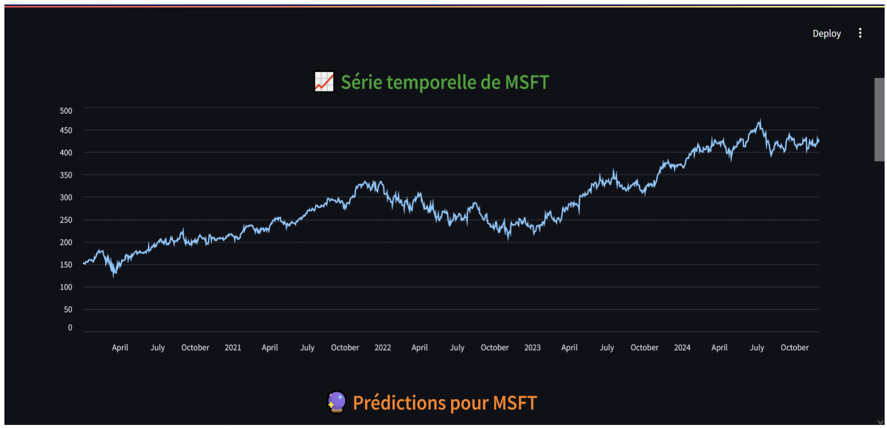

Project Overview
This project compares LSTM (Long Short-Term Memory) and vanilla RNN architectures for predicting IBM stock closing prices. The study demonstrates LSTM's superiority for long-range financial time-series dependencies, and includes a deployable Streamlit web application for interactive forecasting.
Why LSTM for Stock Prediction?
Vanilla RNNs suffer from the vanishing gradient problem — they struggle to learn dependencies across long sequences. LSTM's gating mechanisms (input, forget, output gates) allow the network to selectively retain or discard information over time windows of 50+ days, making them far more suited to financial time series where recent momentum and longer historical patterns both matter.
Experimental Setup
- Data: IBM daily closing prices from Yahoo Finance.
- Window Size: 50 trading days (lookback period).
- Train/Test Split: 80% training / 20% testing (chronological split, no data leakage).
- Preprocessing: MinMaxScaler normalization to [0, 1] range.
- Architecture: 2-layer stacked LSTM (128 units → 64 units) vs. 2-layer stacked RNN, both with Dropout(0.2) and Dense output layer.
Results
LSTM Performance:
- MAE: 2.18 | RMSE: 2.94 | R²: 0.94
RNN Performance:
- MAE: 3.45 — a 37% improvement by LSTM


Streamlit Web App
A fully interactive Streamlit application was built allowing users to:
- Select any stock ticker and historical date range.
- Choose between LSTM and RNN model for prediction.
- Visualize predicted vs actual prices interactively.
- View key performance metrics (MAE, RMSE, R²) in real-time.